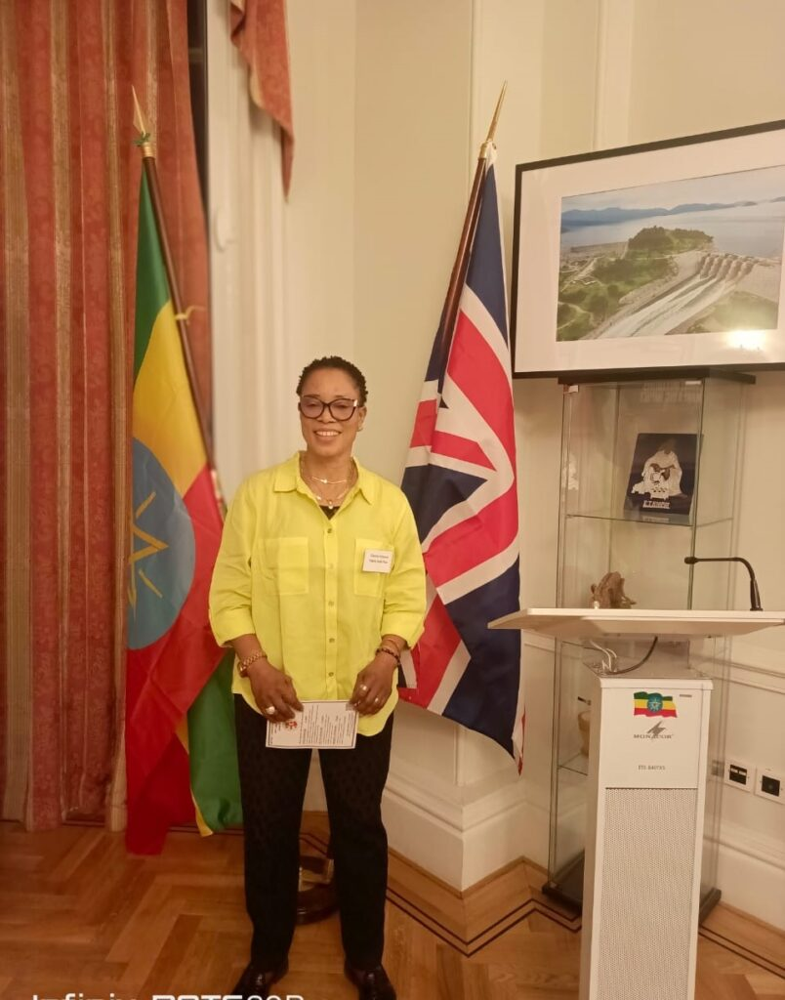
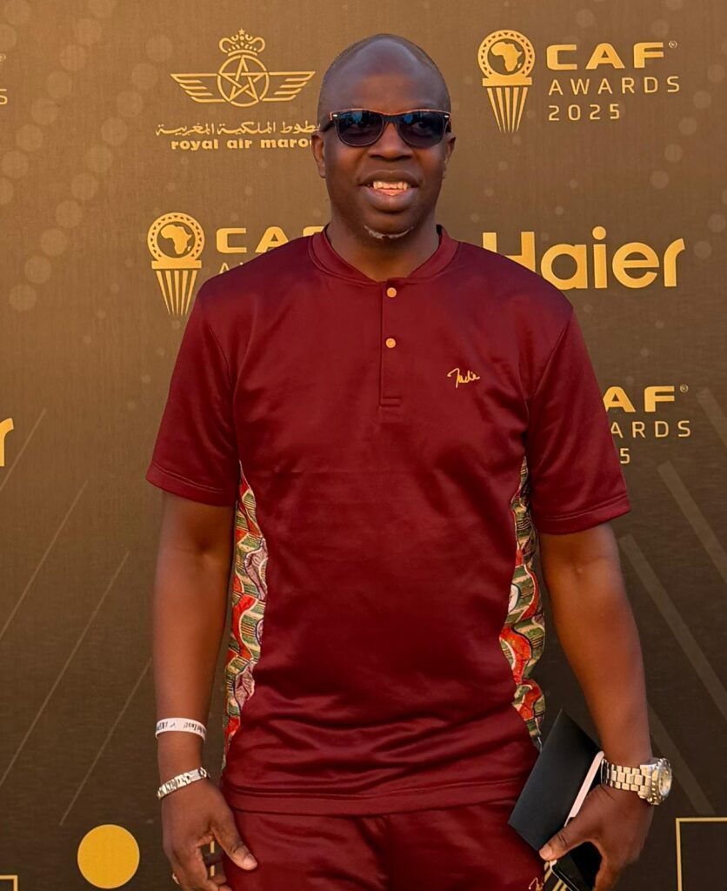
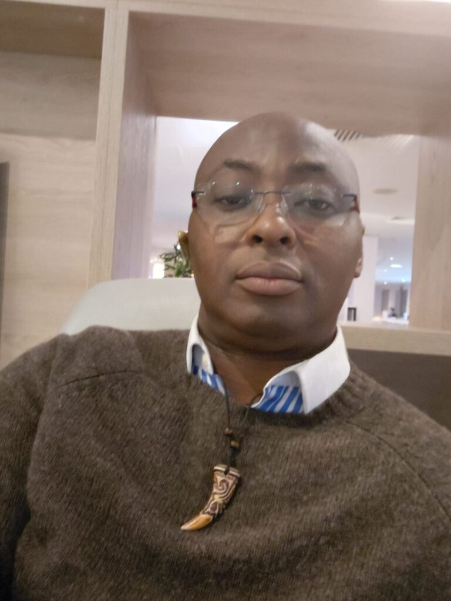
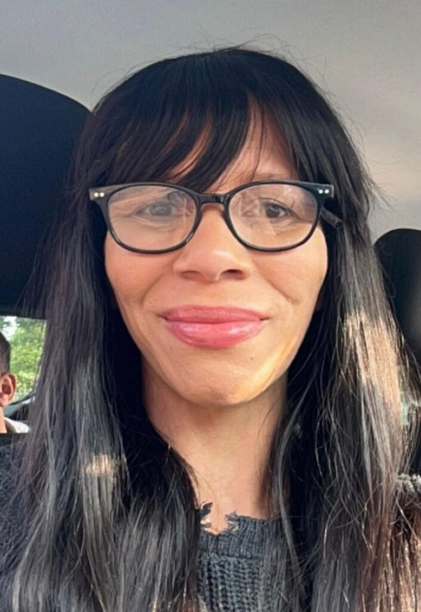
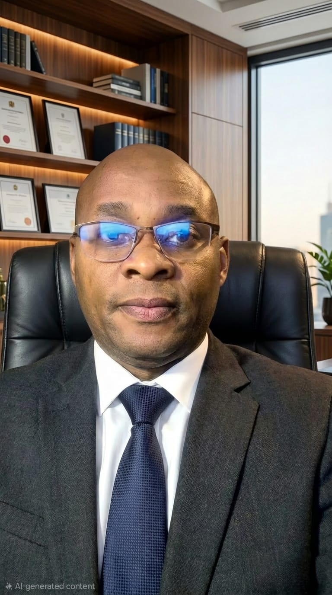

Mission
To unlock opportunities for athletes by connecting talent with the right people, resources and support systems.
TalentGoldPlus was created to bridge that gap. We believe athletes should not be limited by lack of access, funding, exposure or trusted support.
Our platform connects athletes with coaches, professionals, mentors, scouts, investors and partners, creating a complete ecosystem for development, wellbeing and long-term success.
We are committed to empowering female athletes, supporting mental wellbeing and using sport as a pathway away from crime and towards purpose, discipline and opportunity.
To unlock opportunities for athletes by connecting talent with the right people, resources and support systems.
To become a leading global platform for sports talent development, investment and community impact.
Integrity, opportunity, excellence, inclusion, wellbeing and long-term athlete development.
Helping talent gain visibility, support and structured development.
Connecting athletes with trusted experts who can support performance and wellbeing.
Creating pathways for sponsors, investors and partners to support real talent.
Using sport to inspire young people and create positive social change.
TalentGoldPlus is led by people with experience across elite sport, technology, community development, investment, events and international affairs.

Chioma Ajunwa-Oparah, MON, OLY, is one of Africa's most celebrated sporting icons. As the first Nigerian and African woman to win an Olympic gold medal in a field event, she has inspired generations through excellence, resilience and pioneering achievement.
Beyond her success in athletics and football, Chioma has dedicated her career to youth development and public service, serving with distinction in the Nigerian Police Force and establishing the Chioma Ajunwa Foundation to nurture future champions.
As Chairperson of TalentGoldPlus, she provides strategic leadership and a vision centred on creating opportunities for talented athletes regardless of their background, while championing integrity, inclusion and excellence across the organisation.

Dr Tunde Adelakun is an internationally respected football executive, scout, coach and sports administrator with decades of experience developing athletes and building global sporting relationships.
His leadership spans national teams, international football organisations, coaching development, scouting, journalism and mental wellbeing, giving him a unique perspective on athlete progression from grassroots to elite competition.
As Director of International Affairs and Technical Development, Dr Adelakun strengthens TalentGoldPlus through global partnerships, technical expertise and a commitment to creating life-changing opportunities for young athletes worldwide.

David Badejo brings extensive expertise in sports promotion, event management and operational delivery, with a career dedicated to creating high-quality sporting experiences across multiple disciplines.
His background combines sports management, football medicine, coaching and healthcare, allowing him to approach athlete development from both a performance and wellbeing perspective.
As Director of Events, Promotions and Implementation, David ensures that TalentGoldPlus delivers professional events, meaningful opportunities and impactful programmes that connect athletes with the wider sporting community.

Dawn Munroe is an accomplished leader in community development, safeguarding and social care, with extensive experience supporting vulnerable individuals and strengthening local communities.
Throughout her career she has led multidisciplinary teams, managed specialist services and developed programmes that promote inclusion, empowerment and long-term positive change.
As Director of Community Affairs, Dawn ensures that TalentGoldPlus remains committed to safeguarding, equality, mental wellbeing and the creation of environments where every athlete can thrive.
Louise Ngozi Ogboru is an accomplished international consultant with more than two decades of experience across technology, finance, investment, digital transformation and strategic business development.
Her expertise spans emerging technologies, renewable energy, fintech, blockchain, project delivery and impact investment, helping organisations transform innovative ideas into sustainable growth.
As Director of Investment, Innovation and Strategic Development, Louise drives strategic partnerships, investment opportunities and innovation that position TalentGoldPlus for long-term global success.

Olusoji Fasuba, OLY, combines elite sporting achievement with technology leadership. As an Olympic medallist and former World Indoor Champion, he understands first-hand the journey from emerging talent to competing on the world's biggest stages.
Alongside his sporting career, Olusoji has built expertise in cybersecurity and digital technology, leading the development of secure, reliable and scalable digital platforms designed to protect users while delivering outstanding experiences.
As Chief Technology Officer and Performance Director, he oversees the technological vision of TalentGoldPlus while helping shape athlete performance systems that promote excellence, innovation, wellbeing and long-term success.
Join TalentGoldPlus as an athlete, professional, investor, partner or volunteer.